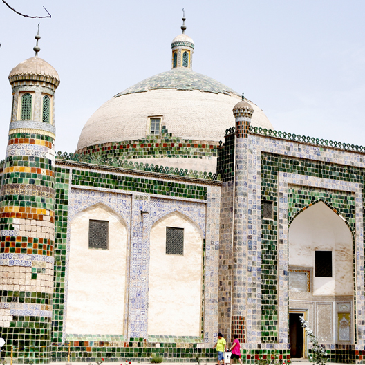
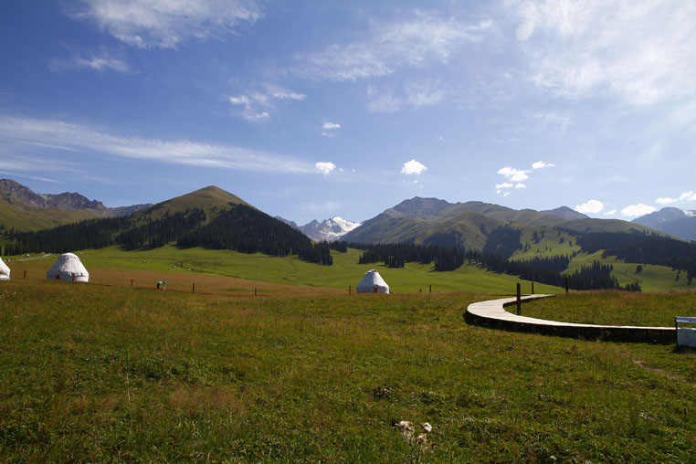

伊斯兰教建筑在世界建筑历史上取得了辉煌的成就，伊斯兰教的建筑风格也深深影响新疆地区的现代建筑设计。
于乌鲁木齐的"新疆国际大巴扎"，在形式、功能、空间上都对传统伊斯兰建筑进行了深入地研究、继承，是"传统与现代有机结合"的成功典范。 异域的风情确实让我精神振奋，玄妙热情的维族音乐，味道纯美的民族食品，以及大街上迎面走来的高鼻大眼的俊男美女都让我每天的生活丰富充实， 当然最令我陶醉的还是伊斯兰色彩的建筑艺术。伊斯兰教认为建筑是一切美术品中最持久的，而宗教建筑是美术的最高成就。伊斯兰建筑独具特色的是 穹庐顶和拱券顶以及两个主要装饰—宗教建筑和世俗建筑共有的"帕提"和钟乳饰。"帕提"是一个拱形门厅，钟乳饰是墙和拱顶之间具有装饰性的过渡部分。 伊斯兰建筑上的这种结构，起源于古代巴比伦，它们很早就运用穹庐形结构于坟墓，运用拱举顶结构于宫殿、寺庙。到了萨珊王朝时期， 这种建筑形式在伊斯兰建筑中占了统治地位。"作为一种富有特征的形式，穹庐和拱形已经被认为是萨珊建筑的典型。"
在伊斯兰教看来，美有很多代名词：仁义、和蔼、杰出、恻隐、熟练、光荣、慷慨、真实、友爱、宽容等。这表明，伊斯兰教的美也带有伦理的色彩。
伊斯兰艺术重想象和冥索形成抽象性，其理论基础是真主的永恒和世间幻有的思想。法国东方学家马斯农（MASSIGNON）说，"伊斯兰思想认为世象是幻有的， 存在无始无终的矛盾和冲突。反映到艺术上，就是由于人形和形式的幻有而拒绝描摹。" 伊斯兰教的信条是只有一个真主——安拉，除此之外，反对偶像崇拜，认为表现人或动物的形象，是对真主所独享特权的侵犯和亵渎， 因此在伊斯兰建筑上既找不到人和动物的画像，也没有以宗教情节为内容的雕像。 在新疆的很多现代建筑设计中，伊斯兰建筑的许多结构和符号仍在被广泛的应用，形成了极具地方特色的现代建筑，特别是乌鲁木齐市二道桥的国际大巴扎。
"巴扎"是阿拉伯语"市场"、"集市"的意思，在信仰伊斯兰教的国家和地区，"巴扎"的规模是当地经济发展、市场繁荣的重要标志。此前世界上规模 最大"巴扎"是土耳其的伊斯坦布尔大巴扎，而"新疆国际大巴扎"建筑面积近10万平方米，拥有3000个民族手工艺品商铺、3000平方米的广场、可容纳1000人 就餐的民族宴会厅、80米高的观光塔、气势宏伟的清真寺，商用电梯、电扶梯多达55部，硬件设施、文化氛围大大超过伊斯坦布尔大巴扎。 
乌鲁木齐，作为一个少数民族自治区的首府，人们希望在乌鲁木齐的城市建设中体现民主地域文化，但真实的情况是一种浮浅的理解民族、地域风格， 符号和装饰滥用，形成了格调不高，平庸、低俗的建筑泛滥。因为民族地域文化的内涵不仅仅是形式问题，人民认可为民族的、传统的、地域的特色的形 成是一系列的建筑、社会、历史、地域、人文、民俗等因素综合而成的。 就现阶段，乌市需要出现一个具有浓厚民族、地域特色的建筑群。需要一批有格调的，形式令人耳目一新但又具有民族、地域特殊的建筑，力求使现代和传统有机结合。